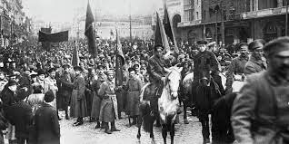
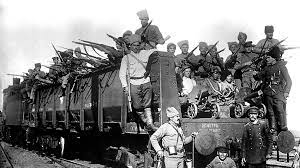
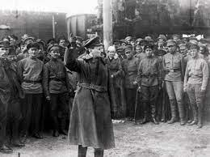

Timeline
November 7, 1917
Russian civil war officially started

1918 - 1921
Deaths, food shortage and very cold winters affected countries involved in war

1922
Afortunaly war ended and the Soviet Union started
